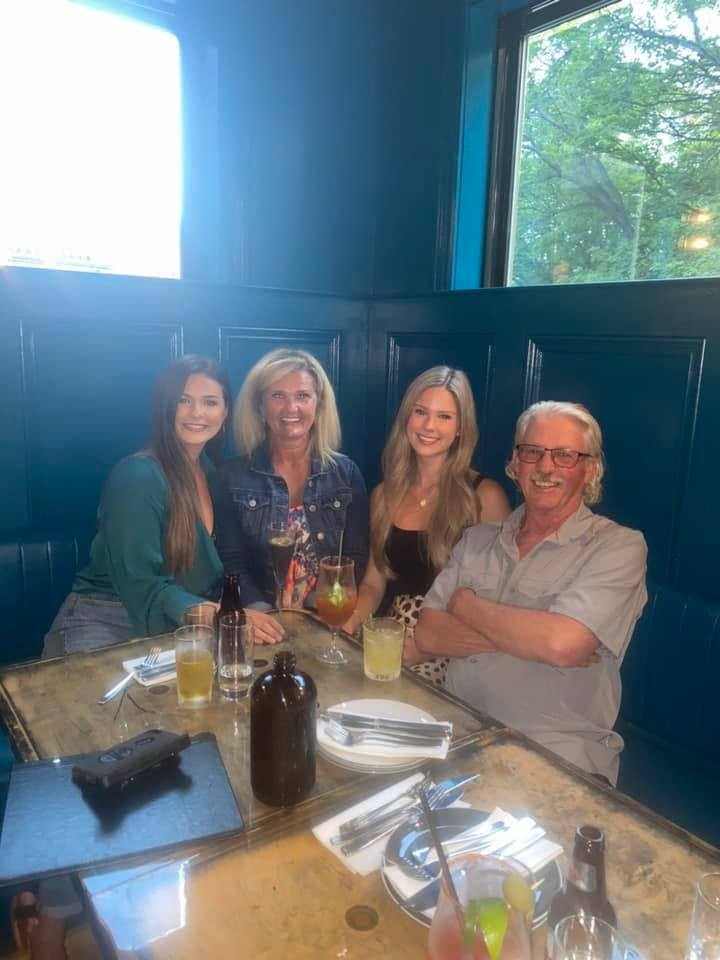

I was born and raised in Paradise, Newfoundland, surrounded by a supportive family and amazing friends. After high school, I attended Memorial University, graduating in 2021 with a Bachelor of Arts degree in Law & Society with a minor in Sociology and a certificate in criminology. Although my original plan was to go to law school to become a lawyer, I decided to switch paths and pursue my growing passion for technology. I am now currently enrolled a software development program at Keyin College, and am set to graduate in August of 2025. I aspire to transition into a role in the field of cybersecurity, which combines my interest in criminology with my newfound interest in technology. 
I have always had a love for physical activity, competing in dance and cheerleading competitions for much of my childhood and teen years. My hobbies include reading, skiing, golfing, and spending time with my family and friends, my fiancé, and our dog. I feel very fortunate to live the life that I live, and I'm very excited to embrace a future in software development.